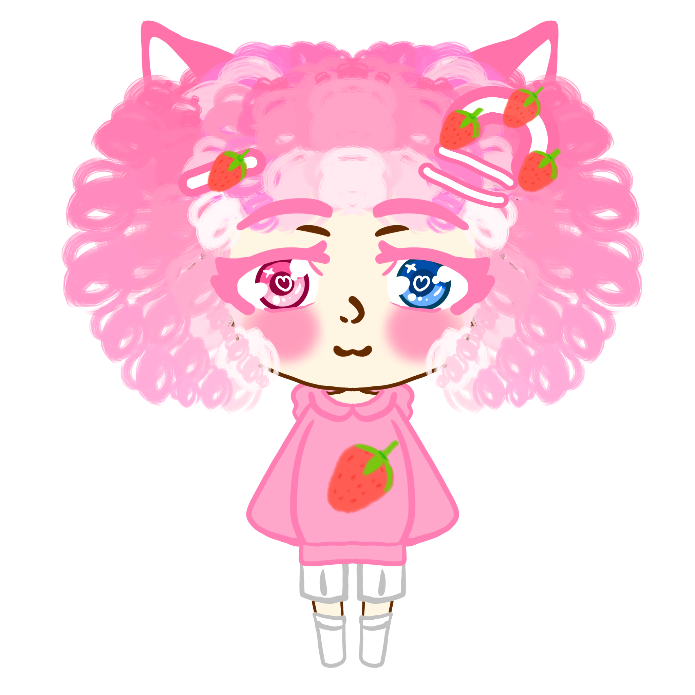

Jascylira
Rôle : Compositeur & Designer sonore 🎵
Spécialité : Musiques d’ambiance, thèmes narratifs et sound design immersif.
Présentation
Jascylira est la voix musicale de Shiraberi. Ses compositions traduisent les émotions des personnages et renforcent l’atmosphère de chaque scène. Il travaille sur la création d’ambiances sonores uniques adaptées à chaque univers.
Grâce à sa sensibilité artistique, il offre aux projets une dimension sonore cohérente et émotive, mêlant instruments classiques et sonorités modernes.